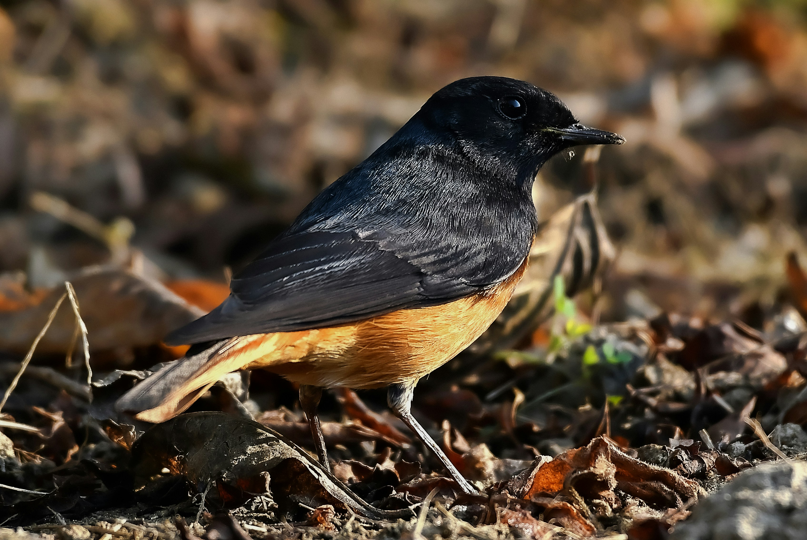

The Black Redstart is a small chat with a dark body, orange-red tail, and characteristic habit of frequently flicking its tail. Plumage varies between males, females, and different populations. It prefers rocky and open habitats and often uses buildings, walls, and cliffs as nesting sites. In India it is primarily encountered in suitable northern and highland habitats during the colder months.